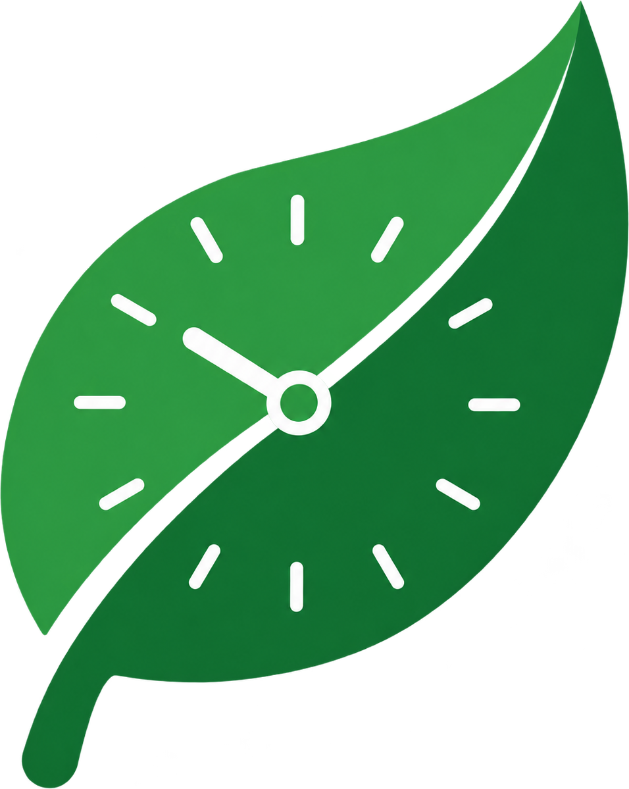
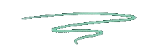
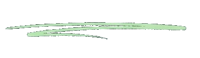
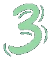
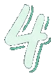
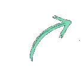

Menos lixo, mais natureza
Cada entrega tira material do lixo comum e ajuda a preservar os recursos naturais do entorno da faculdade.


Transforme o lixo reciclável que você já separa em horas para a faculdade. O EcoHora une sustentabilidade, impacto social e incentivo acadêmico numa única ação dentro do campus.

Junte papel, plástico, metal e vidro na sua rotina normal, sem processo extra.
Leve até um dos pontos espalhados pelo campus, sem sair da sua rota do dia.

Escaneie o ponto de coleta no aplicativo e o material entregue vira pontos na sua conta.

Troque os pontos acumulados por horas complementares reconhecidas pela faculdade.

Fácil de apoiar!Os pontos de coleta ficam nos prédios que você já circula todos os dias, entre uma aula e outra. O EcoHora não pede uma rotina nova, só aproveita o trajeto que você já faz.
Cada entrega tira material do lixo comum e ajuda a preservar os recursos naturais do entorno da faculdade.
O material reciclável coletado vai direto para cooperativas de catadores da região, gerando renda local.
Menos resíduo saindo do campus também significa menor custo de gestão de lixo para a instituição.
Leva menos tempo que ir até a lixeira do outro lado do prédio.
Quero participar